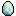

Give your egg a few gentle taps to meet your Chao. Pet them, bring them fruit, and make time to play.
You can also tap directly on the game screen. Use Screen for a bigger view. Tap either little GBA in the garden to play a minigame. Open the shop with L, then pick up a fruit and bring it to your Chao. Colored and rare jewel eggs appear in the shop’s egg row. Some only reveal themselves through time together, minigame records, and caring for your friends. Check the hints in Chao Friends; their exact requirements are a secret. Stock changes after a completed minigame or five minutes. Visit START → Chao Friends to hatch or switch friends; every Chao keeps their name, stats and care progress.
Your garden saves automatically in this browser. Clearing website data will remove your save.
This deletes all Chao in your collection and resets all progress. Export a backup first if you want to keep them.